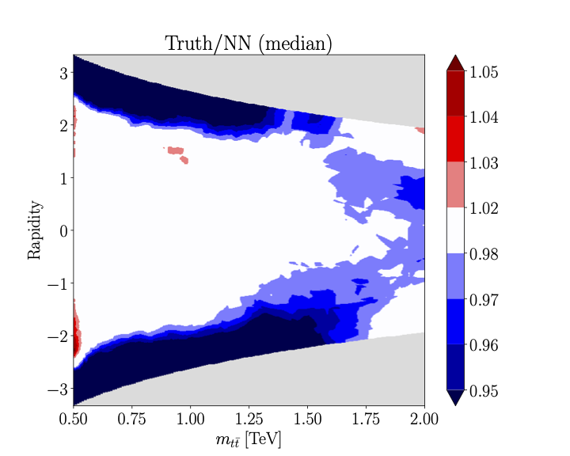
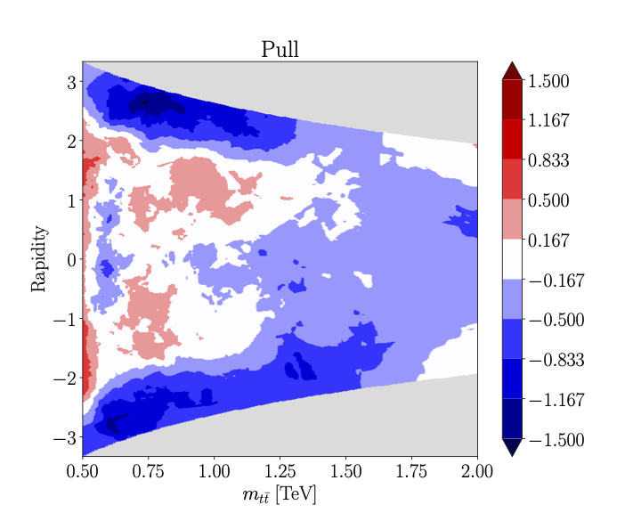
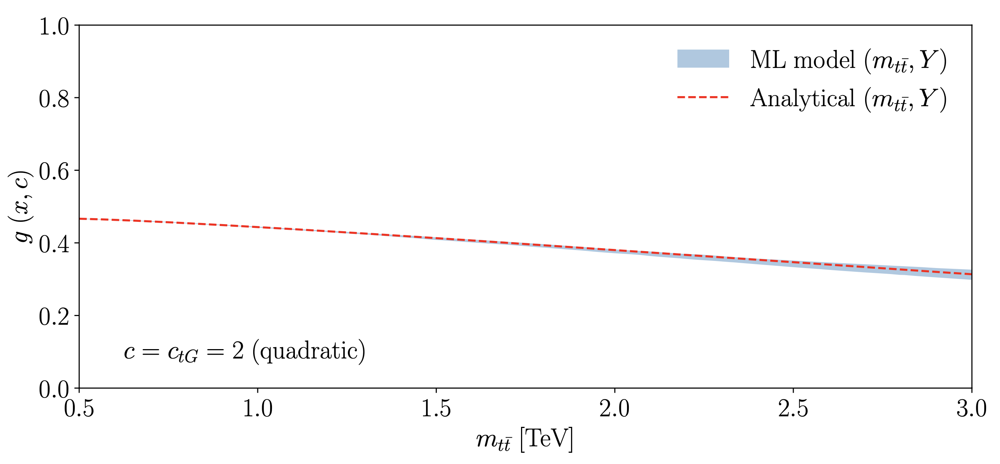
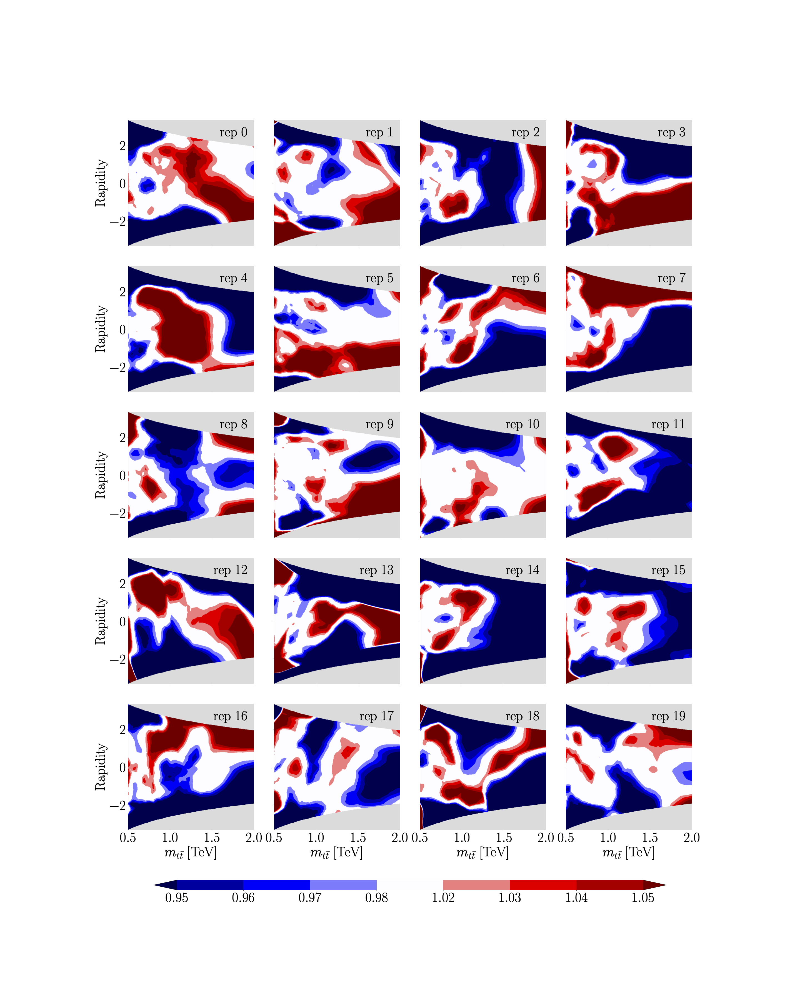
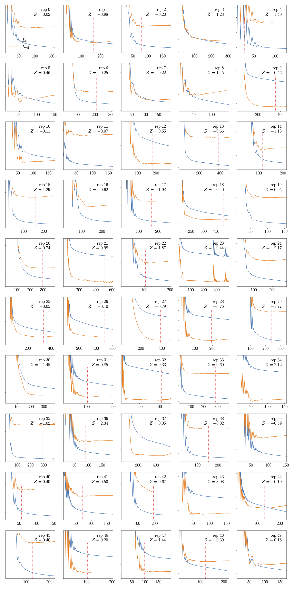
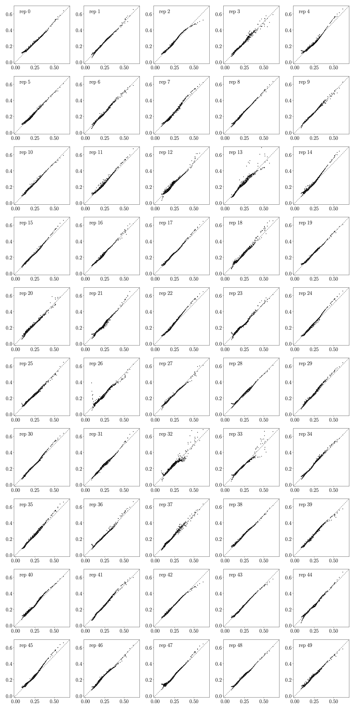
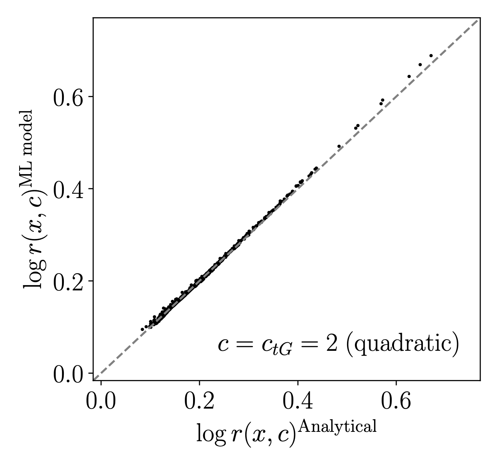

ml4eft.analyse.analyse.Analyse
ml4eft.analyse.analyse.Analyse#
- class ml4eft.analyse.analyse.Analyse(path_to_models, order='quad')[source]#
Bases:
objectPost-training analyser that loads and evaluates models
- __init__(path_to_models, order='quad')[source]#
Analyse constructor
- Parameters
path_to_models (dict) – Of the form {‘lin’: {‘c1’:
<path_to_c1_models>, ‘c2’:<path_to_c2_models>}, ‘quad’: {‘c1_c1’:<path_to_c1_c1_models>}, {‘c1_c2’:<path_to_c1_c2_models>}, {‘c2_c2’:<path_to_c2_c2_models>}}order (str, default='quad') – The order in the EFT expansion (choose between either ‘lin’ or ‘quad’)
Examples
Trained models can be loaded by creating an
ml4eft.analyse.analyse.Analyseobject>>> analyser = Analyse(path_to_models, 'quad')
Followed by constructing a model dictionary that contains all the models plus associated settings
>>> analyser.build_model_dict() >>> analyser.model_df models idx scalers run_card rep_paths lin c1 [Classifier() ... [rep_idx, ...] [RobustScaler(quantile_range=(5,95)), ...] {'name': 'c1', ...} [<path_to_rep>, ...] c2 [Classifier() ... ... ... ... ... quad c1_c1 [Classifier() ... ... ... ... ... c1_c2 [Classifier() ... ... ... ... ... c2_c2 [Classifier() ... ... ... ... ...
Events and the inclusive cross-section can be loaded into a DataFrame by
>>> df, xsec = analyser.load_events('.../events_<rep>.pkl.gz') >>> df sqrts_hat pt_l1 pt_l2 pt_l_leading pt_l_trailing ... 1 1702.356400 20.532279 308.295118 308.295118 20.532279 ... 2 ... ... ... ... ...
To evaluate the models on the loaded DataFrame
df, use:>>> analyser.evaluate_models(df) >>> analyser.models_evaluated_df['models'] >>> analyser.models_evaluated_df['models'] lin c1 [[0.05130317, 0.05723376, 0.058220766, 0.04042... c2 [[0.074420996, 0.10293982, 0.10705493, 0.05695... quad c1_c1 [[0.07958487, 0.13463444, 0.14215767, 0.049889... c1_c2 [[0.0005354581, 0.00042073405, 0.0004430262, -... c2_c2 [[0.00032746396, 0.00041523552, 0.00045115477,...
Methods
__init__(path_to_models[, order])Analyse constructor
accuracy_heatmap(c_name, order, process[, ...])Compares the NN and true EFT ratio functions and plots their ratio and pull
build_model_dict([rep, epoch])Constructs a DataFrame with loaded models plus associated info
build_path_dict(root, order, prefix)Construct path to model dictionary
coeff_function_truth(df, c_name, features, ...)Evaluates the analytic EFT ratio functions \(r_{\sigma}^{(i)}\) and \(r_{\sigma}^{(i,j)}\)
decision_function_nn(c[, df, epoch])Computes the Neural Network parameterised decision function \(g(x, c)\)
decision_function_truth(events, c, features, ...)Computes the analytic decision function
evaluate_models(df[, rep, epoch])Evaluates the loaded models on a Pandas DataFrame
dffilter_out_models(losses)Filter out the badly trained models based on kmeans clustering.
get_event_paths(root_path)Returns a list of paths to the DataFrames at
root_pathlikelihood_ratio_nn(c[, df, epoch])Compute the Neural Network parameterised likelihood ratio
likelihood_ratio_truth(events, c, features, ...)Computes the analytic likelihood ratio \(r(x, c)\)
load_events(event_path)Loads a event DataFrame and splits it into the events and the inclusive cross section
load_loss(path_to_loss)Loades the losses per epoch into a list
load_models(model_path[, rep, epoch])Loads the trained models
load_run_card(path)Loads training run card
plot_accuracy_1d(c, c_name, process, order, ...)Plots the decision boundary \(g(x,c)\) as predicted by the ML model and the analytical (exact) model along 1 dimension, i.e :x=math:m_{tt}
plot_heatmap(ax, data, xlabel, ylabel, ...)Plot and return a heatmap of
dataplot_heatmap_overview(c_name, order, process)Produces an overview of heatmaps showing in each plot the ratio between the ML model prediction and the analytical EFT ratio function \(r_{\sigma}^{(i)}\) or \(r_{\sigma}^{(i, j)}\)
plot_loss_overview(c_name, order[, ax, rep])Plots the loss evolution per replica and returns an overview plot
point_by_point_comp(df, c_name, c, features, ...)Produces a point by point comparison overview per replica of the log-likelihood ratio between the ML model and the analytical (exact) model
point_by_point_comp_med(df, c, features, ...)Produces a point by point comparison of the log-likelihood ratio between the (median) ML model and the analytical (exact) model
posterior_loader(path)Loads the posterior samples at
pathand converts it to a DataFrame- accuracy_heatmap(c_name, order, process, mx_cut=None, rep=None, epoch=- 1, ax=None, text=None)[source]#
Compares the NN and true EFT ratio functions and plots their ratio and pull
- Parameters
c_name (str) – Name of the EFT parameter, e.g. ‘ctgre’
order (str) – Order in the EFT expansion, options are ‘lin’ or ‘quad’
process (str) – Specifies the process. Currently supported is ‘tt’ and ‘ZH’
mx_cut (list, optional) – Plot range of the invariant mass
rep (int, optional) – Request to plot for a specific replica
epoch (int, optional) – Request to plot for a specific epoch.
ax (matplotlib.pyplot.axes, optional) – Axes to plot on
text (str, optional) – Add additional text on the heatmap such as the replica number
- Returns
matplotlib.figure.Figure – Heatmap of EFT ratio function
matplotlib.figure.Figure – Heatmap of associated pull
Examples
For a single EFT coefficient \(c_{tG}\) the likelihood ratio takes the form
\[r_{\sigma}(x, c_{tG}) = 1 + c_{tG} r_{\sigma}^{(c_{tG})} + c_{tG}^2 r_{\sigma}^{(c_{tG}, c_{tG})}\]To plot for example the accuracy of \(r_{\sigma}^{(c_{tG}, c_{tG})}\) by plotting its ratio to the exact result, one runs
>>> fig_med, fig_pull = analyser.accuracy_heatmap('ctgre_ctgre', 'quad', 'tt') >>> fig_med
>>> fig_pull
- build_model_dict(rep=None, epoch=- 1)[source]#
Constructs a DataFrame with loaded models plus associated info
- static build_path_dict(root, order, prefix)[source]#
Construct path to model dictionary
- Parameters
- Returns
path_to_models – Dictionary containing the paths to the models for each EFT ratio function
- Return type
- coeff_function_truth(df, c_name, features, process, order)[source]#
Evaluates the analytic EFT ratio functions \(r_{\sigma}^{(i)}\) and \(r_{\sigma}^{(i,j)}\)
- Parameters
df (pandas.DataFrame) – Events on which to evaluate \(r_{\sigma}^{(i)}\) and \(r_{\sigma}^{(i,j)}\)
c_name (str) – Name of the EFT coefficient. Choose between ‘ctgre’, ‘cut’, ‘cut_cut’, ‘ctgre_ctgre’
features (list) – Kinematic features, options are
m_tt,yprocess (str) – Supported options are ‘tt’ or ‘ZH’
order (str) – Order of the EFT expansion, choose between ‘lin’ and ‘quad’
- Returns
coeff –
(N,) ndarraywith \(r_{\sigma}^{(i)}\) or \(r_{\sigma}^{(i,j)}\) evaluated ondfdepending on theorder- Return type
array_like
- decision_function_nn(c, df=None, epoch=- 1)[source]#
Computes the Neural Network parameterised decision function \(g(x, c)\)
- Parameters
- Returns
decision_function – NN decision function
- Return type
- decision_function_truth(events, c, features, process, order=None)[source]#
Computes the analytic decision function
- Parameters
order (str, optional) – Specifies the order in the EFT expansion. Must be one of
lin,quad.process (str) – Choose between
ttorZHfeatures (list) – List of kinematic labels
events (pd.DataFrame) – Pandas DataFrame with the events
c (numpy.ndarray, shape=(M,)) – EFT point in M dimensions, e.g c = (cHW, cHq3)
- Returns
decision_function – Truth decision function
- Return type
- evaluate_models(df, rep=None, epoch=- 1)[source]#
Evaluates the loaded models on a Pandas DataFrame
df
- static filter_out_models(losses)[source]#
Filter out the badly trained models based on kmeans clustering.
- Parameters
losses (array_like) – Losses of all the trained models
- Returns
good_model_idx – Array indices of the ‘good’ models
- Return type
- static get_event_paths(root_path)[source]#
Returns a list of paths to the DataFrames at
root_path- Parameters
root_path (str) – path to the DataFrame directory
- Returns
event_paths – list of paths to the DataFrames at stored at
root_path- Return type
Examples
The paths to the event DataFrames stored at
root_pathcan be loaded for ‘n_rep’ replicas by>>> analyser.get_event_paths('/training_data/tt_llvlvlbb/tt_c1') [/training_data/tt_llvlvlbb/tt_c1/events_0.pkl.gz', ... , /training_data/tt_llvlvlbb/tt_c1/events_<n_rep>.pkl.gz']
- likelihood_ratio_nn(c, df=None, epoch=- 1)[source]#
Compute the Neural Network parameterised likelihood ratio
- Parameters
c (dict) – Of the form {‘c1’: value, ‘c2’: value, …}
df (pandas.DataFrame, optional) – In case the loaded models have not been evaluated yet, one can pass
dfto evaluate the neural networksepoch (int, optional) – Specify an epoch if necessary, takes the best model by default
- Returns
ratio – likelihood ratio as
(N,M) ndarraywithNandMthe number of replicas and events respectively- Return type
array_like
- static likelihood_ratio_truth(events, c, features, process, order=None)[source]#
Computes the analytic likelihood ratio \(r(x, c)\)
- Parameters
- Returns
ratio – Likelihood ratio wrt the SM
- Return type
- static load_events(event_path)[source]#
Loads a event DataFrame and splits it into the events and the inclusive cross section
- Parameters
event_path (str) – Path to the DataFrame (including the xsec as first row)
- Returns
events (pandas.DataFrame) – DataFrame with events
xsec (float) – Inclusive cross-section of the events
- load_models(model_path, rep=None, epoch=- 1)[source]#
Loads the trained models
- Parameters
- Returns
models (array_like) –
(N,) ndarraycontaining the loaded neural networksmodels_rep_nr (array_like) –
(N,) ndarraycontaining the replica numbers of the loaded neural networksscalers (array_like) –
(N,) ndarraycontaining the preprocessing scalers of the loaded neural networksrun_card (dict) – training run card of the trained models
rep_paths (array_like) –
(N,) ndarraywith the paths to the neural networks
- plot_accuracy_1d(c, c_name, process, order, mx_cut, epoch=- 1, ax=None, text=None)[source]#
Plots the decision boundary \(g(x,c)\) as predicted by the ML model and the analytical (exact) model along 1 dimension, i.e :x=math:m_{tt}
- Parameters
c (dict) – Of the form {‘c1’: value, ‘c2’: value}
process (str) – Choose between
ttorZHorder (str, optional) – Specifies the order in the EFT expansion. Must be one of
lin,quad.mx_cut (list) – Plot range of the invariant mass
epoch (int, optional) – Specific epoch to plot, set to the best models by default
ax (matplotlib.axes, optional) – Plot on an already created axes object
text (str, optional) – Additional text to show on the plot
- Returns
fig – Plot comparing the decision boundary \(g(x,c)\) as predicted by the ML model and the analytical (exact) result
- Return type
matplotlib.figure
Examples
>>> analyser = Analyse(path_to_models, 'quad') >>> fig = analyser.plot_accuracy_1d(c={'ctgre': -2, 'cut': 0}, process='tt', order='quad', cut=0.5, text=r'$c=c_{tG}=2\;\mathrm{quadratic}$') >>> fig
- static plot_heatmap(ax, data, xlabel, ylabel, title, extent, bounds, cmap='GnBu', rep=None, text=None)[source]#
Plot and return a heatmap of
data- Parameters
data (numpy.ndarray, shape=(M, N)) – Input array
xlabel (str) – x-label
ylabel (str) – y-label
title (str) – title of plot
extent (list) – boundaries of the heatmap, e.g. [x_0, x_1, y_1, y_2]
bounds (list) – The boundaries of the discrete colourmap
cmap (str) – colourmap to use, set to ‘GnBu’ by default
- Returns
fig
- Return type
matplotlib.figure.Figure
- plot_heatmap_overview(c_name, order, process, mx_cut=None, reps=None, epoch=- 1)[source]#
Produces an overview of heatmaps showing in each plot the ratio between the ML model prediction and the analytical EFT ratio function \(r_{\sigma}^{(i)}\) or \(r_{\sigma}^{(i, j)}\)
- Parameters
c_name (str) – Name of EFT coefficient
order (str) – Order in the EFT expansion
process (str) – Specifies the process, choose between ‘tt’ and ‘ZH’
mx_cut (float, optional) – Plot range of the invariant mass
reps (int, optional) – Number of replicas to include in the heatmap overview
epoch (int, optional) – Specific epoch to plot at, takes the best models by default
- Returns
fig
- Return type
matplotlib.figure
Examples
To produce a heatmap overview of the first 20 replicas, run
>>> analyser = Analyse(path_to_models, 'quad') >>> fig = analyser.plot_heatmap_overview('ctgre_ctgre', 'quad', 'tt', cut=0.5, reps=np.arange(20)) >>> fig
- plot_loss_overview(c_name, order, ax=None, rep=None)[source]#
Plots the loss evolution per replica and returns an overview plot
- Parameters
- Returns
fig (matplotlib.figure) – Loss overview plot
train_loss_best (array_like) – List of ‘best’ training losses
Examples
To plot a loss overview corresponding to the training of \(r_{\sigma}^{(c_{tG}, c_{tG})}\), run
>>> analyser = Analyse(path_to_models, 'quad') >>> fig, train_losses = analyser.plot_loss_overview('ctgre_ctgre', 'quad') >>> fig
- point_by_point_comp(df, c_name, c, features, process, order)[source]#
Produces a point by point comparison overview per replica of the log-likelihood ratio between the ML model and the analytical (exact) model
- Parameters
df (pandas.DataFrame) – DataFrame with events
c_name (str) – name of EFT ratio function to compare, e.g.
c1_c2c (dict) – Of the form {‘c1’: value, ‘c2’: value}
features (array_like) – List of features to include in the comparison
process (str) – Choose between
ttorZHorder (str) – Specifies the order in the EFT expansion. Must be one of
lin,quad.
Examples
>>> analyser = Analyse(path_to_models, 'quad') >>> fig, ax = plt.subplots()
>>> events_sm = pd.read_pickle('<events_sm_0.pkl.gz>') >>> analyser.point_by_point_comp(events_sm, {'ctgre': -2, 'cut': 0}, ['y', 'm_tt'], 'tt', 'lin') >>> fig
- point_by_point_comp_med(df, c, features, process, order, ax, text=None)[source]#
Produces a point by point comparison of the log-likelihood ratio between the (median) ML model and the analytical (exact) model
- Parameters
df (pandas.DataFrame) – DataFrame with events
c (dict) – Of the form {‘c1’: value, ‘c2’: value}
features (array_like) – List of features to include in the comparison
process (str) – Choose between
ttorZHorder (str) – Specifies the order in the EFT expansion. Must be one of
lin,quad.ax (matplotlib.axes) – Axes object to plot on
text (str) – Additonal text to put on the plot
Examples
>>> analyser = Analyse(path_to_models, 'quad') >>> fig, ax = plt.subplots()
>>> events_sm = pd.read_pickle('<events_sm_0.pkl.gz>') >>> analyser.point_by_point_comp_med(events_sm, {'ctgre': 2, 'cut': 0}, ['y', 'm_tt'], 'tt', 'lin') >>> fig